Quatre algorithmes à connaître
Factorielle
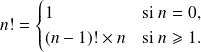
Factorielle n'est pas une fonction prédéfinie dans Python, alors qu'elle est très souvent utile en mathématique notamment pour le calcul des coefficients binomiaux .
Question
Écrire une version itérative, puis une version récursive d'une fonction pour calculer la factorielle d'un entier.
def factorielle_iter(n) :
'''renvoie !n de maniere iterative pour n entier naturel'''p = 1
for i in range(2, n + 1) :
# l'invariant est "p = produit des i premiers entiers a la ieme iteration"p *= i
return ( p )
def factorielle_rec(n) :
'''renvoie !n de maniere recursive, pour n entier naturel'''if n == 0 :
# cas de basereturn ( 1 )
else : # l'argument est le variant # l'invariant est "la fonction renvoie le produit des entiers compris entre n et (n - k) lors du kieme appel."return ( n * factorielle_rec(n - 1) )
Question
Montrer que votre algorithme termine et est correct.
Les variants et invariants de boucle sont renseignés dans les commentaires des fonctions.
Question
À l'aide du module time, comparer les temps de calcul de vos programmes pour .
J'ai créé une fonction qui peut comparer plusieurs fonctions d'un seul argument.
import time
def compar_temp(L_fct, arg, N) :
'''compare le temps mis pour faire N appels des fonctions entrées dans la liste L_fct avec l'argument simple arg.'''for fct in L_fct :
debut = time.time()
for k in range(N) :
fct(arg)
fin = time.time()
print('duree pour ', N, 'appels de la fonction ', \
str(fct).split()[1], ': ', fin - debut)
Comme cela, je vais pouvoir m'en servir pour tout le TD avec l'appel suivant.
>>> compar_temp([factorielle_iter, factorielle_rec], 1000, 1)
duree pour 1 appels de la fonction factorielle_iter : 0.0010251998901367188
duree pour 1 appels de la fonction factorielle_rec : 0.001998424530029297
Résolution d'équation par dichotomie
Soit
 une fonction continue sur
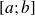
telle que
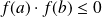
. Le théorème des valeurs intermédiaires nous assure que
s'annule au moins une fois sur
. De plus, si
est strictement monotone sur
, on sait alors que
s'annule une unique fois sur cet intervalle. Le but est de trouver une valeur approchée d'une solution de l'équation
une fonction continue sur
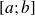
telle que
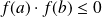
. Le théorème des valeurs intermédiaires nous assure que
s'annule au moins une fois sur
. De plus, si
est strictement monotone sur
, on sait alors que
s'annule une unique fois sur cet intervalle. Le but est de trouver une valeur approchée d'une solution de l'équation
 .
.
Le principe de la dichotomie consiste à construire une suite de segments emboîtés qui va converger vers un singleton 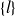 tel que 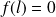 . Plus précisément, on a le théorème suivant :
Soit 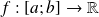 continue telle que . Il existe une suite de segments emboîtés 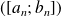 , avec 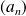 et 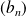 deux suites réelles, telle que 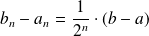 et 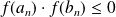 .
Question
Écrire une version itérative, puis une version récursive d'une fonction pour déterminer la racine d'une équation 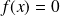 par la méthode de dichotomie.
Version itérative
def dicho_it(f, a, b, eps = 1e-12) :
'''renvoie un encadrement de la valeur approchee d'une solution de f(x)=0 sur [a, b] d'une longueur inferieure a eps affectee par defaut a 10^-12.'''u, v = min(a, b), max(a, b)
while (v - u) > eps :
# variant : int( (v - u) / eps ) # invariant : f(u) * f(v) <= 0m = (u + v) / 2 # m est le milieu de [u, v]
if f(u) * f(m) <= 0 :
v = m
else :u = m
return(u, v)
Version récursive
def dicho_rec(f, a, b, eps = 1e-12) :
'''renvoie un encadrement de la valeur approchee d'une solution de f(x)=0 sur [a, b] d'une longueur inferieure a eps affectee par defaut a 10^-12 par un algorithme recursif.'''if abs(b - a) < eps :
# cas de basereturn(a, b)
else : # variant : int( (v - u) / eps ) # invariant : f(u) * f(v) <= 0m = (a + b) / 2 # m est le milieu de [u, v]
if f(a) * f(m) <= 0 :
b = m
else :a = m
return( dicho_rec(f, a, b, eps) )
Comparaison des performances des deux algorithmes
J'ai modifié la gestion des arguments de ma fonction précédente.
import time
def compar_temp(L_fct, args, N) :
'''compare le temps mis pour faire N appels des fonctions entrées dans la liste L_fct avec les 3 arguments entrés dans le tuple args.'''for fct in L_fct :
debut = time.time()
for k in range(N) :
fct(args[0], args[1], args[2])
fin = time.time()
print('duree pour ', N, 'appels de la fonction ', \
str(fct).split()[1], ': ', fin - debut)
Voici les résultats.
>>> compar_temp([dicho_it, dicho_rec], (lambda x : x ** 5 - 3, 0, 2), 1000)
duree pour 1000 appels de la fonction dicho_it : 0.06956648826599121
duree pour 1000 appels de la fonction dicho_rec : 0.08004117012023926
La différence n'est pas très notable.
Exponentiation rapide
Pour élever un nombre à la puissance
 , il existe un algorithme bien plus performant que la méthode naïve consistant à multiplier ce nombre
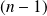
fois par lui-même : il s'agit de la méthode dite d'exponentiation rapide. Étant donnés un réel positif
, il existe un algorithme bien plus performant que la méthode naïve consistant à multiplier ce nombre
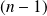
fois par lui-même : il s'agit de la méthode dite d'exponentiation rapide. Étant donnés un réel positif
 et un entier
, on remarque que :
et un entier
, on remarque que :
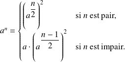
Cet algorithme se programme naturellement par une fonction récursive.
Question
Programmer cette exponentiation rapide et comparer sa performance à celle de la méthode itérative classique avec le module time.
Exponentiation rapide
def expo_rapide(a, n) :
'''renvoie a ^ n par la methode d'exponentiation rapide'''if n == 0 : return(1) # cas de base
else : # variant : nreturn( a ** (n % 2) * expo_rapide(a, n // 2) ** 2 )
Remarque :
L'algorithme que je propose ne suit pas exactement la définition donnée dans le sujet. En fait, j'écris 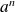 sous la forme d'une seule expression, en remarquant que :
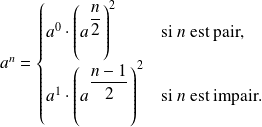
Donc 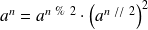
Comparaison entre exponentiation rapide et exponentiation naïve
def expo_iter(a, n) :
res = 1
for i in range(n) :
res = a * res
return (res)
import time
def compar_temp(L_fct, args, N) :
'''compare le temps mis pour faire N appels des fonctions entrées dans la liste L_fct avec les 2 arguments entrés dans le tuple args.'''for fct in L_fct :
debut = time.time()
for k in range(N) :
fct(args[0], args[1])
fin = time.time()
print('duree pour ', N, 'appels de la fonction ', \
str(fct).split()[1], ': ', fin - debut)
compar_temp([expo_iter, expo_rapide], (12, 100000), 1)
duree pour 1 appels de la fonction expo_iter : 1.2050120830535889
duree pour 1 appels de la fonction expo_rapide : 0.008244752883911133
Soit 146 fois moins de temps !
Algorithme de Ruffini-Horner
La méthode de Ruffini-Horner de recherche d'une valeur approchée de racine d'un polynôme est publiée à quelques années d'intervalle par Paolo Ruffini (1765-1822, italien) et par William George Horner (1786-1837, britannique) mais il semble bien que Horner n'ait pas eu connaissance des travaux de Ruffini. La méthode de Horner est ensuite popularisée par les mathématiciens De Morgan et J.R. Young.
Supposons que l'on souhaite calculer la valeur en 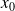 du polynôme :
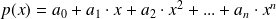 .
La première idée pour évaluer
 en
est de calculer chaque puissance de
de manière naïve, de multiplier par les coefficients, puis de tout additionner (ce qui nécessite
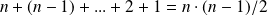
produits).
en
est de calculer chaque puissance de
de manière naïve, de multiplier par les coefficients, puis de tout additionner (ce qui nécessite
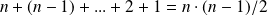
produits).
On peut certes diminuer le nombre de multiplications à effectuer en utilisant l'algorithme d'exponentiation rapide.
La méthode de Ruffini-Horner permet de réduire encore le nombre de multiplications, en remarquant que :
Ce faisant, il n'y a plus que
multiplications à effectuer !
Pour programmer cet algorithme, il suffit de calculer les
valeurs de la suite
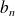
définie par :
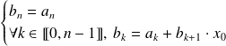
Question
Programmer l'algorithme de Ruffini-Horner de manière récursive (le polynôme
étant représenté par la liste de ses coefficients
).
def Ruffini_Horner(P, x0, k = 0) :
'''renvoie P(x0) avec P liste des coefficients du polynome P dans l'ordrecroissant, et x0 flottant. k est l'indice qui va croitre pour pouvoir arreterla foncition recursive'''if k == len(P) - 1 :
return (P[k]) # cas de base
else : # variant : len(P) - kreturn (Ruffini_Horner(P, x0, k + 1) * x0 + P[k])